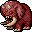

地獄の象 Hellephant
英語版 CrawlWiki の記事「Hellephant」(0.32 向け、2025-02-01 版)の翻訳です。原文の著者は編集履歴をご覧ください。
この記事は 0.32 の時点の内容で、最新の 0.34 とは違うところがあるかもしれません。
| 地獄の象 Y  | |
|---|---|
| HP | 112-227 |
| HD | 20 |
| XP | 1937 |
| 速度 | 10 |
| AC | 13 |
| EV | 10 |
| 意志力 | 140 |
| 攻撃1 | 45(踏みつけ: 踏みつけ) |
| 攻撃2 | 20(噛みつき: 通常) |
| 攻撃3 | 15(角突き: 通常) |
| 耐性 | rMiasma rN+++ rTorm |
| 弱点 | 神聖 |
| 生息地 | 陸上 |
| 知能 | 動物並み |
| 使用 | 何も使わない |
| 分類 | 悪魔 |
| 体格 | 巨大 |
| 種類 | 象、地獄の象 |
| フラグ | 邪悪 温血 |

| 悪魔の末裔である忌まわしい厚皮動物で、内側から地獄の炎で燃えている。 |
基本情報
地獄の象は、ありふれた象に似た、恐ろしく強い悪魔だ。小柄な親類と同じくとても頑丈で、攻撃は重く、戦闘では相手を踏みつけて1マス押し戻す。一方で象と違い、炎の球体と同じ激しさの火炎を吐き、悪魔ならではの耐性を持ち、好きなときに瞬間移動できる。ありがたいことに出会うことは少なく、出てくるのはおもに地獄の入り口、ゲヘナ、アビス、パンデモニウム、そしてオーブを持っての脱出のときだ。
呪文
小技
- rF++ 以上がないと、こいつらの相手をするときにはかなりのダメージを覚悟しなければならない。
- 戦場のあちこちへしょっちゅう瞬間移動してくるので、少しやりすぎなくらいの手段を使ってでも早めに片づけてしまおう。近接戦闘キャラクターは、追いかけ回しているうちにさんざん痛めつけられてから、ようやく仕留めることになりかねない。
- 悪魔でない象と同じく毒への耐性がないので、クラーレ毒を塗ったダーツで動きを鈍らせられる。
- 自分自身は火炎への免疫どころか耐性すら持っていないので、こちらからファイアボールを浴びせるのも理にかなっている。
変更履歴
- 地獄の象は 0.7 で追加された。